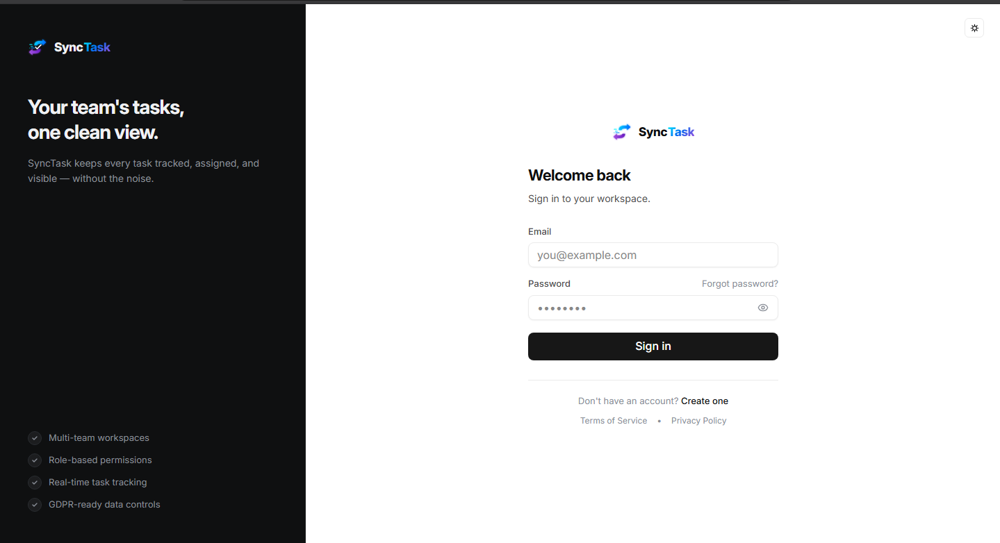
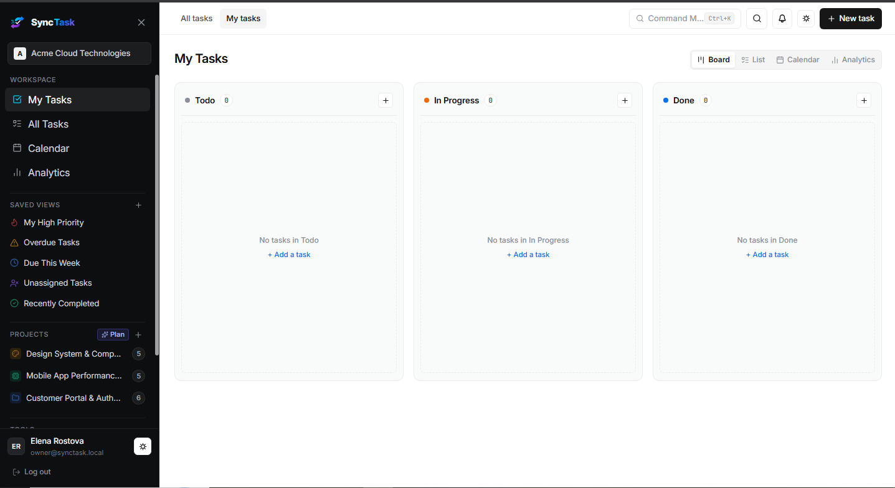
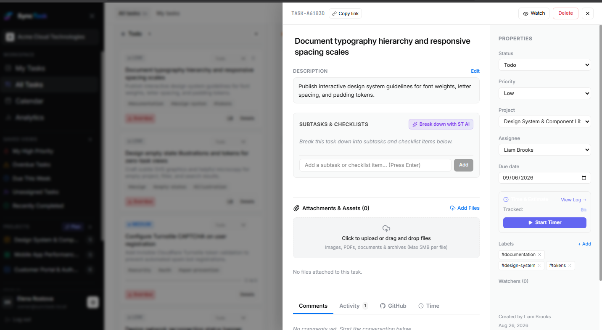

All projects
02 / 07
> cd ~/projects/synctask
synctask.

// What it is
A full-stack task management platform with AI-powered natural-language workflows for organizing and managing projects.
// The repository is named taskflow; the project was renamed to Synctask during development.
// What's in it
- Create tasks with AI from the new-task dialog
- Board, list, calendar and analytics views
- Command palette and notifications panel
- Task details with subtasks and properties



Next project // 03